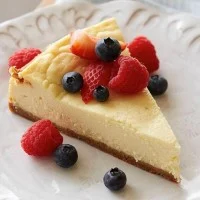
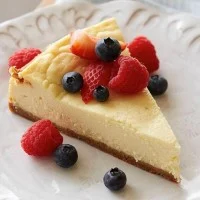

Inani beach is a famous place in Cox’s Bazar. But for lack of proper information’s tourist failed to visit an amazing place like Inani beach. The Inani beach is mainly a coral beach with sharp stones. Inani beach is only 23 km. away from Cox’s bazar and takes only 40min to go by road. You can enjoy the beach view as it is different from other beaches. There are high tides on sea and you must stay in a safe place when the redflags up. Be careful if you try to swim here as the tides are unpredictable in this part of the sea.
The longest marine drive in the world is Cox’s bazar – Teknaf marine drive which is about 80 kilometer long. You can ride a jeep called Chander Gari from Cox’s Bazar to Teknaf ,the southeast point of Bangladesh. You can go to Saint Martin Island by using the marine drive. Let's make a drive soon!
Saint Martin Island also known as Narikel jinjira, Daruchini Dwip, Probal Dwip is a small Island and it is the southernmost part of Bangladesh. It is about three square kilometer and known for its unique scenic view. Saint Martin Island will give you an amazing feeling where you can enjoy the sea sides from every part of the island as well as from the middle of the sea.
There is a lighthouse in Island. There are ships from Cox’s bazar to visit Saint Martin Island where tourists can enjoy about 190 mile of sea traveling with scenic views with the seagulls flowing their cruise ship.
 
